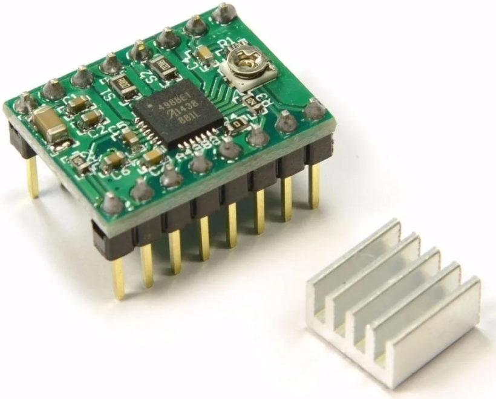

Makinarte
Proyecto Espacio Open Residencia 2022

Dia 1 con Ferdi 11.08.2022
16:00 - 18:00h
Masterclass sobre Steppers
Hay un tutorial completo sobre steppers en la web de Ferdi:
http://feadi.de/es/tutorials/steppers/
Primer concepto de los motores a pasos (steppers):
Unipolar y Bipolar

Explicación de las diferencias entre ambos:
https://blog.330ohms.com/2016/02/09/motores-a-pasos-unipolares-o-bipolares/
https://es.wikipedia.org/wiki/Motor_paso_a_paso
Nosotros vamos a utilizar bipolar con 4 cables, por lo que nos hará falta un driver para poder ir haciendo las transmutaciones entre fases.
Para saber cada cable del motor a qué pertenece
Si tenemos los 4 cables del motor y no sabemos cuál es cuál, hay un varios trucos para saber si los cables son del mismo bobinado:
- Si hacemos un cortocircuito entre 2 cables y al girar el motor con la mano está duro, eso quiere decir que esos cables son cada uno de los bordes de un bobinado.
- Si medimos la resistencia entre los cables, si la resistencia es infinito, quiere decir que son cables que no son del mismo bobinado. En el caso del motor unipolar también podremos saber cuál es la fase intermedia ya que la resistencia con esta conexión es la mitad que la bobina entera.
- Si conectamos una pila a los cables y hacen un pequeño giro, eso quiere decir que esos cables son del mismo bobinado.
Driver A4988
Conectamos las 4 salidas de los motores a estos drivers para que sea más fácil el manejo de los motores.
El driver hace la función de ir transmutando la corriente en el bobinado del motor para que gire.
Las entradas del driver son la dirección y la velocidad del motor, por lo que su control se facilita mucho.
Programa y placa Arduino
Para el circuito con Arduino, se ha seguido un esquema muy simple que aparece en el siguiente link:
https://www.schmalzhaus.com/EasyDriver/Examples/EasyDriverExamples.html
En el ejemplo aparece este código:
void setup() {
pinMode(8, OUTPUT);
pinMode(9, OUTPUT);
digitalWrite(8, LOW);
digitalWrite(9, LOW);
}
void loop() {
digitalWrite(9, HIGH);
delayMicroseconds(1000);
digitalWrite(9, LOW);
delayMicroseconds(1000);
}
Con este programa se consigue que el motor gire a una velocidad muy reducida, ya que cada segundo cambia de paso (cada paso suelen ser unos 1.8º).
Dia 2 con Ferdi 22.08.2022
18:00 - 20:00h
Encontrado documentacion del Arduino CNC-shield:
https://blog.protoneer.co.nz/arduino-cnc-shield/
Markdown (lenguaje de programación para crear textos con formato)
https://www.markdownguide.org/cheat-sheet/
Test Poti (Potenciómetro)
- reconnectamos el cable de alimentacion
- metimos los 3 jumpers para el microstepping en ejeX
- ajustamos la corriente hasta 1V
- descubrimos que el Microsecond delay va bien entre 50 y 2000us

Utilizamos el ejemplo
File --> examples --> 01.Basics --> ReadAnalogVoltage
para testar el Poti.
Para ver los valores del Poti utilizamos el "serial monitor"
Tools --> serial monitor
https://www.arduino.cc/reference/es/language/structure/control-structure/switchcase/
Switch / Pull up
Se puede utilizar la resistencia incorporada (20K ohm) que tiene la placa de Arduino.
Para ello, hay que activarla en el código (ver código abajo). Con este truco podemos evitar poner resistencias.
Por ejemplo, en un circuito con un interruptor solamente, no sería necesario poner una resistencia si activamos la resistencia interna de Arduino.
Files --> Examples --> 02.Digital --> DigitalInputPullup
Código para activar la resistencia (en el ejemplo en el pin 2):
{
pinMode(2, INPUT_PULLUP);
}
Una vez activado, el interruptor se conecta a tierra (GND), ya que la resistencia interna está conectada a 5V

https://docs.arduino.cc/tutorials/generic/digital-input-pullup
Delay
La función Delay presenta un problema para nuestro proyecto, donde tenemos varios steppers con diferentes velocidades.
La función Delay hace que, durante el periodo de tiempo indicado, Arduino quede en espera, que la placa no ejecute ninguna operación.
De esta manera, si tenemos varios motores a diferentes velocidades, no podemos usar Delay, ya que habría que activar pines durante los Delays de otro motor. Hay que hacerlo con otra estrategia.
Files --> Examples --> 02.Digital --> BlinkWithoutDelay
unsigned long previousMillis = 0;
const long interval = 1000;
void loop() {
unsigned long currentMillis = millis();
if (currentMillis - previousMillis >= interval) {
previousMillis = currentMillis;
if (ledState == LOW) {
ledState = HIGH;
} else {
ledState = LOW;
}
Dia 3 con Ferdi 23.08.2022
11:30 - 13:00h
Prueba con Arduino con un motor y potenciometro
Prueba con el motor colocado en la zona de movimiento en X del shield con un potenciómetro para variar su velocidad.
En este programa utilizamos la misma estrategia que el programa anterior para variar la velocidad del motor: usamos la resta de tiempos (hora_actual - hora_previa) para mandarle las señales que harán que el motor avance paso a paso.
Convertimos la variación de resistencia dentro del potenciómetro en diferencia de voltaje (0 - 5V). Esa diferencia de voltaje Arduino la registra como entrada (analogRead) y la convierte a un valor entre 0 y 1023. Es decir, escala los valores de 0 - 5 hasta 0 - 1023. Después, utilizamos ese valor numérico como microsegundos para determinar la activación y desactivación del pin que manda las señales de activación del motor, haciendo que gire más rápido o más lento.
prueba04_1stepper_ver_poti_2
const int xStep = 2; // pin del step del motor X (velocidad)
int xStepState = LOW;
// Generally, you should use "unsigned long" for variables that hold time
// The value will quickly become too large for an int to store
unsigned long previousmicros = 0;
const long interval = 100; // interval at which to blink (microseconds)
void setup()
{
pinMode(xStep, OUTPUT);
pinMode(5, OUTPUT); // es para indicar la dirección de giro
pinMode(2, OUTPUT); // es para indicar la velocidad de giro (step)
pinMode(8, OUTPUT); // es para activar el motor (enable)
Serial.begin(9600);
digitalWrite(8, LOW);
}
void loop()
{
int intervalX = analogRead(A0);
unsigned long currentmicros = micros();
if ((currentmicros - previousmicros >= intervalX)
{
previousmicros = currentmicros;
if (xStepState == LOW)
xStepState = HIGH;
else
xStepState = LOW;
digitalWrite(xStep, xStepState);
}
}
Prueba con Arduino una vuelta entera del motor
Hicimos este pequeño programa para ver una vuelta entera del motor. Lo hicimos en el setup() para que no esté continuamente haciendo la vuelta y así saber que está bien programado (sino, no sabes dónde empieza y dónde acaba cada vuelta).
Para ello utilizamos un for{} que hará 200 pasos, ya que cada paso del motor son 1.8º x 200 = 360º, que es una vuelta. Como hemos habilitado la opción de microstepping, tenemos 1/16 de paso en cada activación del pin de step, por lo que tenemos que hacer un total de 200 x 16 = 3200 cambios del pin de step para dar una vuelta completa en el motor.
Como son 3200 cambios y cada cambio lo hace en un milisegundo, el motor tardará 3.2 segundos en hacer la vuelta completa.
prueba05_1stepper_micropasos
void setup()
{
pinMode(5, OUTPUT);
pinMode(2, OUTPUT);
pinMode(8, OUTPUT); //enable
digitalWrite(5, LOW);
digitalWrite(2, LOW);
digitalWrite(8, LOW);
for (int x = 0; x < 200*16; x++) // Este for hace una vuelta entera del motor
{ // Para que de una vuelta el stepper son 200 pasos x 16 microsteps cada paso
paso();
}
}
void loop()
{
}
void paso()
{
digitalWrite(2, HIGH);
delayMicroseconds(1000);
digitalWrite(2, LOW);
delayMicroseconds(1000);
}
Prueba con Arduino con un interruptor
En esta prueba instalamos un interruptor al pin 9. Hemos utilizado la opción Pullup, que permite utilizar la resistencia interna de Arduino para circuitos donde se utilizan interruptores. Si no usamos esta opción, tendremos que poner nosotros una resistencia en el circuito.
Usamos el pin 13 porque al pin 13 hay unido un diodo en la placa Arduino y así podemos ver si está HIGH o LOW la salida del pin en función de si el led está encendido o apagado.
prueba06_interruptor_led_pin13
void setup()
{
//start serial connection
Serial.begin(9600);
//configure pin 2 as an input and enable the internal pull-up resistor
pinMode(9, INPUT_PULLUP);
pinMode(13, OUTPUT);
}
void loop()
{
int sensorVal = digitalRead(9);
//print out the value of the pushbutton
Serial.println(sensorVal);
// Keep in mind the pull-up means the pushbutton's logic is inverted. It goes
// HIGH when it's open, and LOW when it's pressed. Turn on pin 13 when the
// button's pressed, and off when it's not:
if (sensorVal == HIGH)
digitalWrite(13, LOW);
else
digitalWrite(13, HIGH);
}
Prueba con Arduino con un motor, potenciometro e interruptor
En esta prueba incluimos la prueba con el potenciómetro y la prueba con interruptor para controlar la velocidad y el dirección de giro del motor.
El interruptor que utilizamos en un principio fue de 3 patas, y tenía 3 posiciones: izquierda, centro y derecha. Nuestra idea era que estando en el centro el motor estuviese parado y girando la palanca a izquierda o derecha que el motor gire a un lado o a otro. De esta manera, nos hacen falta 2 pines para mandar la señal del interruptor al Arduino:
- directionX1: recoge la información del pin xDirin1
- directionX2: recoge la información del pin xDirin2
Utilizamos también la opción Pullup en los pines del interruptor para utilizar la resistencia interna de Arduino y así no necesitamos colocar nosotros ninguna resistencia.
prueba07_1stepper_vel_poti_interruptor_3pos.ino
// Pines del motor X del cnc shield
const int xStep = 2; // es para indicar la velocidad de giro (step)
const int xDir = 5; // es para indicar la dirección de giro
const int xDirin1 = 9; // es para rotar el motor en una direccion (X- en el cnc shield)
const int xDirin2 = 10; // es para rotar el motor en la otra direccion (Y- en el cnc shield)
int xStepState = LOW;
unsigned long previousmicros = 0;
void setup()
{
pinMode(8, OUTPUT); // es para activar el motor (enable)
// Pines Output para motores
pinMode(xStep, OUTPUT);
pinMode(xDir, OUTPUT);
// Pines Input para motores
pinMode(xDirin1, INPUT_PULLUP);
pinMode(xDirin2, INPUT_PULLUP);
Serial.begin(9600);
// Para activar el enable y que los motores funcionen
digitalWrite(8, LOW);
}
void loop()
{
int intervalX = analogRead(A0);
bool directionX1 = digitalRead(xDirin1);
bool directionX2 = digitalRead(xDirin2);
unsigned long currentmicros = micros();
if ((currentmicros - previousmicros >= intervalX) && (directionX1 == LOW || directionX2 == LOW))
{
previousmicros = currentmicros;
if (xStepState == LOW)
xStepState = HIGH;
else
xStepState = LOW;
}
digitalWrite(xStep, xStepState);
// Condiciones para que el motor gire en una dirección o en la otra
if (directionX1 == HIGH)
digitalWrite(xDir, LOW);
if (directionX2 == HIGH)
digitalWrite(xDir, HIGH);
}
Cambio de interruptor
Hemos tenido que cambiar el interruptor de 3 salidas a 2 salidas porque no tenemos pines suficientes para conectar todo lo que necesitamos. Tenemos 13 pines de entrada / salida y nos hacen falta 8 pines para las salidas de velocidades y dirección de giro de los 4 motores. De esta manera, nos quedan 13 - 8 = 5 pines para los interruptores. Si queremos instalar los interruptores de 3 salidas, cada interruptor usaría 2 pines, usando un total de 4 x 2 = 8 pines, por lo que no tenemos pines suficientes. Vamos a cambiar a los interruptores de 2 salidas porque así solo usamos 1 pin por cada motor.
Dia 4 con Ferdi 25.08.2022
18:00 - 19:30h
Prueba con 3 motores, potenciómetro e interruptor de 2 posiciones
Primera prueba que nos funciona con 3 motores conectados, cada uno con su potenciómetro y su interruptor de 2 posiciones. 😃
Imprimir en impresora 3D la pieza para unir el motor con la base
Dejamos la electrónica de lado y nos volvemos con la estructura de la máquina.
Tenemos un problema para unir el motor con la base de madera de la máquina: los tornillos que tiene el motor en la parte inferior hace que no se pueda atornillar nada a la base desde abajo. Tras estudiar varias opciones, decidimos que vamos a hacer una pieza impresa en 3D que irá unida al motor con 2 de los tornillos que cierran el motor y esta pieza a su vez tendrá 4 tornillos para amarrar la pieza a la base de madera.
Crear el modelo 3D en FreeCad
Creamos el modelo 3D en el programa FreeCad. Por suerte, ya hemos trabajado con programas CAD tales como CATIA o NX y ya conocemos el funcionamiento de estos programas. Hacer la placa debería resultar una tarea sencilla. Sino, se puede usar otro programa, muy intuituvo, llamado TinkerCad. Nosotros decidimos utilizar el FreeCad para conocerlo, ya que el FreeCad permite realizar geometría más complejas que TimkerCad. Podemos utilizar cualquier programa CAD que genera una malla de puntos (.stl) al final del proceso, ya que usaremos ese archivo para llevar al programa que creará el recorrido de la máquina 3D.
Una vez hemos creado la pieza, exportamos la geometría como .stl
Crear el archivo para la máquina 3D
Importamos la malla de puntos (.stl) al programa de la máquina 3D. En este caso hemos elegido PrusaSlicer, y le hemos puesto la configuración de la máquina 3D que vamos a utilizar. En este programa se introducen varios parámetros importantes para la hora de imprimir el material, tales como: temperaturas de impresión del material, % de material para rellenar el sólido, espesor de las capas... El % de material es importante, y en muchos casos no es necesario que sea el 100%, ya que son piezas que tienen poca solicitación mecánica. Nosotros hemos utilizado el 25%, y es un valor que está bien para una pieza que, como hemos dicho, no va a estar solicitada mecánicamente. De esta manera ahorramos mucho tiempo y material.
Una vez hemos configurado los parámetros, el programa genera un archivo .gcode que introduciremos en la máquina de impresión 3D con un pen-drive.
Imprimir en la máquina 3D
Vamos a la máquina 3D e introducimos el pen-drive. Encendemos la máquina y seleccionamos el archivo .gcode que hemos generado. Seleccionamos y la máquina empieza a imprimir a de unos pocos segundos, cuando se calienta el cabezal. Hace unas pequeñas líneas de prueba y enseguida empieza a imprimir la pieza.
En nuestro caso, aunque la pieza sea pequeña ha tardado una hora en imprimir la pieza completa. Una vez impresa, prácticamente se puede quitar con una espátula porque se enfría enseguida.
Día 6 y 7 (27 y 28/08/2022, fin de semana)
Decisión de hacer el 3D
Tomamos la decisión de hacer el 3D en el programa FreeCad para facilitarnos la labor de dimensionar y fabricar las piezas 3D, además de visualizar y prever posibles problemas. Empleamos casi todo el domingo en empezar a hacer las primeras piezas del CAD.
Día 8 (29/08/2022)
Imprimir en 3D la pieza que sujeta la polea grande a la base de la máquina
Hicimos el modelo 3D de esta pieza y seguimos los sabios consejos de Ferdi de utilizar rodamientos esféricos para sujetar bien el eje a la pieza. Para que el eje se sujete bien vamos a utilizar dos rodamientos, separados por una tuerza, para que la rotación del eje sea lo más vertical posible. Esta pieza ya es más grande y tarda unas 3h en imprimirse.
Día 9 (30/08/2022)
Imprimir en 3D la polea grande que sujeta la base del papel
Hicimos la pieza más grande que vamos a imprimir en 3D: la polea dentada que recibe el movimiento del cuarto motor y que girará el papel.
Para asegurarnos de que habíamos dibujado bien los dientes, imprimimos un pequeño pedazo en 3D para chequear con una cinta dentada que funcionaba. Era algo crítico, ya que los huecos para los dientes de la cinta tienen que ser muy precisos, sino no transmitimos bien el movimiento al eje.
La pieza, de diámetro 200mm, casi llega a los límites de la impresora 3D (220mm). Por suerte, estamos dentro de los límites. Tras 11 horas imprimiendo, la pieza salió perfectamente de la máquina de imprimir.
Día 10 (31/08/2022)
Decisión de hacer un prototipo
Tras ver las dificultades que tenemos para librar la diferencias de altura entre discos y la base donde va el papel, decidimos hacer un prototipo para ver las dimensiones in situ y chequear también que la electrónica funciona bien. Hemos visto que Robert Balke, nuestro artista de referencia, utiliza planetario (1:19 posiblemente) para reducir la velocidad de los motores de los discos. Nosotros creemos que nos podemos evitar utilizarlos, ya que tampoco son unos componentes baratos (cada uno cuesta unos 30-40€, lo que aumenta bastante nuestro presupuesto).
Continuar dibujando el 3D
Día 11 (01/09/2022)
Diseño de la unión entre el eje del motor y los discos
Han surgido muchas ideas para esta unión: desde piezas impresas en plástico hasta piezas comerciales que hemos encontrado en Internet.
Parece que vamos a optar por una opción comercial que tiene una rosca de M10 en la punta, donde enroscaremos el disco. En el disco taladraremos un agujero para meterle una hembra de M10 que enrosque con la pieza.
Día 12 (02/09/2022)
Escaneo de engranajes de spirograph para utilizar en FreeCad
- Escaneamos las piezas en un escáner
- Abrimos el FreeCad y creamos un Body
- Seleccionamos el menú de Image y abrimos la imagen con el icono de "Crear plano de imagen..."
- Importamos la imagen en el plano que nos interese (a nosotros el plano XY)
- Podemos escalar la imagen con el botón de "Escala del plano de la imagen". Para ello nos hace falta una medida entre dos puntos. Nosotros hemos escogido el diámetro de los discos como referencia.
- Una vez hecho esto, se pueden hacer sketch encima de la imagen a escala real y tomarla como referencia para crear piezas o lo que queramos con ellas.
Aprendemos a hacer moldes con silicona y maicena
Está apuntado en el Whatsapp de Makinarte el proceso de elaboración
Día 13 (05/09/2022)
Imprimimos la pieza de unión del motor central con la base de madera
Esta pieza es muy similar a las otras 3 piezas imprimidas; la única diferencia es que los agujeros son rasgados. Los hemos hecho rasgados para poder ajustar la tensión de la cinta de la polea. La distancia de la cinta la hemos calculado con una macro de FreeCad y a mano para chequearlo.
Visita a Leroy Merlin a coger ideas
Cogemos ideas para la unión del eje del motor con los discos. Vamos a la sección de herramientas, donde pensamos que podemos encontrar algo interesante porque la unión de los ejes de los taladros con discos para cortar y pulir pueden ser similares. Pese a disponer de pocas soluciones, cogemos la idea de utilizar un portabrocas o similar para unir el eje con el disco, poniéndole a este último un eje para poder agarrarlo con el portabrocas.
Compra de varios elementos que nos faltan
Compramos la correa gt2 de longitud 686mm, los mandrinos con los que finalmente uniremos los ejes de los motores a los discos y una brida rígida para unir el elemento que va a pintar a la estructura de barras. Todo esto nos llegará en los próximos días.
Día 14 (06/09/2022)
Seguimos dibujando el CAD
Añadimos los mandrinos, terminamos de diseñar los discos y añadimos las barras metálicas. El CAD ya está casi terminado 😃 Ahora queda terminar con el prototipo y decidir cómo diseñar el modelo definitivo de máquina.

Día 15 (08/09/2022)
Llegan los mandrinos y la brida rígida
Llegan estos elementos, con lo que ya podemos ver cómo va a quedar la unión de los motores con los discos. De esta manera también podemos empezar a cortar tanto los discos con la madera donde irá el papel en la CNC, que ya está lista después de que Ferdi diseñara la caja donde irá la electrónica.
Aprendemos a utilizar la CNC
Ferdie nos enseña cómo crear un gcode (mismo tipo de archivo que utiliza la printer 3D) para que la cnc mecanice en el progama FreeCad. Con lo que nos enseña conseguimos mecanizar en la cnc los discos que van encima de los motores.
Para empezar debemos crear la pieza que vamos a cortar en la cnc (llamada "stock"). Nosotros utilizamos el resto de material que nos quedó tras cortar la pieza que sujeta el papel. Era una madera de 350mm x 150mm aprox. Dibujamos esta pieza con el módulo de "Part Design", como hemos hecho hasta ahora.
Después de crear el part donde cortaremos las piezas, importamos las piezas que vamos a cortar y la pieza de corte a un assembly nuevo. Podemos crear vínculos, sin necesidad de crear las piezas otra vez, creando "crear pieza" (es el mismo icono que "crear cuerpo" pero en amarillo) y después se selecciona la pieza que se quiere vincular y se le da al botón "Crear vínculo". De esta manera, dentro de la pieza se queda el part original linkado.

Para mover las piezas a las posiciones que queremos, tenemos que darle click derecho a la pieza y elegir "transformar". Aparecen unos ejes, donde podremos rotar y desplazar la pieza. Clicando en la punta de las flechas y arrastrando podemos mover la pieza. La podemos girar también si es necesario.

Cambiamos al módulo de "Path". En este módulo vamos a definir las operaciones que va a realizar la CNC. En nuestro caso, haremos unos agujeros pasantes (operación "Forma de vaciado" en FreeCad), unos agujeros ciegos (también en la operación "Forma de vaciado") y el contorno de la pieza (operación "Cara" en FreeCad); 3 operaciones en total. Seleccionamos la opción "Trabajo" para empezar a definir los parámetros. Aquí se nos indica el que va a ser el punto (0,0,0) de la cnc.
- Definimos en la pestaña "General", dentro de "Trabajo", las geometrías que vamos a usar, que son todas: el stock y los discos en este caso.
- Definimos también el procesador, en la pestaña "Salida", y escogeremos "smoothie".
- Dentro de "Configuración", en el Inventario escogemos "Usar sólido existente" y escojemos el stock que hemos creado antes.
La cnc utiliza una broca de 4mm de diámetro y nuestros agujeros son de 5mm de diámetro, con lo que está OK. Aun así, como veríamos más adelante, los agujeros de 5mm de diámetro han quedado un poco pequeños y los hemos tenido que repasar con un taladro de diámetro 5mm. Parece que si el diámetro de agujero es un poco más grande que la broca no lo hace del todo bien. En todas estas operaciones del FreeCad, debemos definir las bases de la geometría que van a ser de referencia para cada operación, las profundidades a las que se va a llegar a mecanizar (en nuestro caso casi todo pasante, por lo que será el espesor de la pieza a cortar) y el controlador de la herramienta (en nuestro caso 4mm_endmill). Si se definen bien las operaciones, aparecerán unas líneas verdes y rojas en el CAD: indican el recorrido que hace la herramienta haciendo las operaciones que hemos definido y los saltos de una operación a otra respectivamente.

Truco: Hay operaciones que requieren que pequeñas áreas del mecanizado no se realicen. Por ejemplo, cuando se cortan piezas grandes, se dejan unas pequeñas zonas sin cortar para terminar de cortarlas después a mano. Así, se evita que la pieza se mueva mientras se terminan de hacer todas las operaciones correctamente. FreeCad permite introducir estos elementos y darles una dimensión acorde a nuestras preferencias.
Limitamos la velocidad de la broca en dirección X e Y a 6000mm/min.
Una vez hemos terminado de definir las operaciones, hay que exportar el gcode. Para ello, seleccionamos el botón "Post Procesar". Con ello ya tenemos el gcode generado.
Vamos a la CNC!
En la CNC tenemos que:
- Alinear bien la pieza que queremos cortar en la mesa de trabajo. Nosotros la alineamos con el (0,0,0) de la máquina.
- Amarrar bien la pieza a la mesa de trabajo. Para ello utilizamos 2 tornillos.
- Hacer pruebas antes de hacer el mecanizado final para ver que todo está OK.
- Para la prueba, ajustamos la posición local de la broca en la mesa de trabajo, en los ejes X, y y Z.
- Una vez ajustamos la posición, guardamos los valores.
- Una vez guardados los valores, podemos empezar el programa. Este programa no lo empezamos con la broca encendida, ya que vamos a chequear tanto la velocidad de la máquina como sus movimientos.
- Una vez vemos que en la prueba están bien la velocidad y los movimientos, pasamos a la operación defintiva.
- Reprogramamos las coordenadas locales a las posiciones correctas. Para ellos, primero ajustamos bien la Z fuera de área donde tenemos la pieza atada (para que coja bien la coordenada Z) y después ajustaremos X e Y.
- Una vez ajustadas las coordenadas locales, las guardamos.
- Encendemos la broca.
- Corremos el programa final con la broza en marcha.
- Durante el corte, chequeamos que va bien y retiramos de vez en cuando la viruta generada por la broca.
Tuvimos un problema de corte con la CNC y tuvimos que repasar el agujero central ciego con el taladro y una broca de M12.
Día 16 (09/09/2022)
Llega la correa gt2 para las poleas
Llegan las correas de 686mm de longitud. Las probamos y vemos que la medida está perfecta.
Montaje de los discos y de la madera del papel
Montamos los discos con las hembras roscadas de M10 que compramos. Han costado meter porque el agujero que teníamos era de M12 y pedía algo más grande. Aún así, hemos conseguido meter las piezas y hemos tenido problemas para que queden bien alineadas. Roscamos los discos a los machos que nos han quedado en los motores (después de instalar los madrinos) y vemos que roscan perfectamente y que quedan bastante bien alineados. ¡Vamos avanzando!
La madera de papel la hemos amarrado a la polea grande con 3 tornillos. Habíamos previsto 6 agujeros para meter 6 posibles tornillos. Vemos que con 3 es suficiente, así que vamos con esos 3.
Probamos la electrónica con 3 motores
Corremos el programa de Arduino que habíamos programado con 3 motores y vemos que funciona, que se mueven perfectamente sin problema los 3 motores de los discos. El cuarto motor, el que gira la base donde irá el papel, no lo tenemos programado y, por lo tanto, no lo podemos probar. Lo probaremos más adelante.
Empieza el Repair Café de Espacio Open!
Ferdie abre la primera sesión del repair café. Como no pudo tener difusión por las redes, no acude nadie. Sin embargo, aparecen pacientes para ser reparados: una máquina de café de cápsulas que pierde agua, una vieja lámpara que no da luz... El repair café empieza con buen pie.
Ferdie se esmera con la cafetera y, tras limpiar una junta y ver que va bien, canta victoria y da la cafetera por reparada. Celebrando y tomando un café en su honor, vemos que pierde agua... así que la cafetera pasa a quirófano otra vez! Esta vez la abrimos y Ferdie se da un descanso y dice que prefiere seguir la faena el proximo día. Veremos cuál es el desenlace más adelante.
Día 17-21 (10-13/09/2022)
Cortamos la caja donde irá la electrónica
Con una tabla de material sobrante (madera de unos 5mm de espesor), cortamos unos listones con la radial y montamos una pequeña caja. Colamos los laterales a la base y dejamos un lateral sin colocar, ya que en ese lateral vamos a hacer un agujero para colocar el interruptor donde irá enchufado el cable de 3 puntas. La tapa también la dejamos suelta porque nuestra idea es poner unas visagras para que se pueda abrir desde arriba.
Ultimando detalles
Dejamos pendiente terminar la electrónica (falta soldar todos los componentes), la caja, las barras y la pieza donde irá colocado el elemento que vaya a pintar sobre el papel. Dejamos en 13 de septiembre el Espacio Open para embarcarnos en otro proyecto: el máster de Diseño Estratégico de productos y servicios que vamos a hacer ambos en MU. Por unas semanas dejamos aparcado el proyecto para terminarlo más adelante.
Día 18-19 (21 y 22/10/2022)
Vuelta al proyecto! Soltando la electrónica
Pese a que nos llevamos material con la intención de soldar fuera del Espacio Open, aprovechamos un respiro que nos dió el máster para seguir con el proyecto. Teníamos ganas de soldar y aprovechamos la tarde del viernes para ello. Fuimos con el objetivo de terminar de soldar y lo logramos (el día siguiente jeje). A golpe de "plunga plunga", soldamos los cables a los componentes e hicimos una pequeña placa base que nos sirve para unificar la electrónica y hacerla de manera más organizada. De esta manera también podemos soltar los componentes por independiente y reemplazarlo o utilizarlos para otros fines (ya estamos pensando en otras máquinas en el futuro...!).
Montar las barras
Con la gran ayuda de Kepa, cortamos las barras con la radial e hicimos los agujeros de M3 para unir las barras a los discos y unir las barras entre sí. Utilizamos las medidas que ha calculado la Excel y que vemos que dan buen resultado, ya que el dibujo no sale de la medida de 300x300mm.
Montar la pieza que sujeta el elemento que pinta
Aprovechando el tirón de cortar las barras, a una de las barras le hacemos un pequeña hendidura para que podamos colocar la pieza que sujeta el elemento que va a pintar. La atornillamos con 2 tornillos de M3 y sus tuercas correspondientes para fijar la pieza. Parece que la máquina está lista para la primera prueba...
¡¡¡Primera prueba!!!!
Tras montar las barras, ya teníamos posibilidad de montar la máquina y probarla dibujando por primera vez. Pusimos todo a punto y, con un público que quería verla funcionar, le dimos al start del programa en Arduino y... no funcionó. Nos dimos cuenta de que la placa se apagaba, que Arduino parecía que no funcionaba. Pensábamos lo peor: Arduino o la placa se habían roto. No habíamos olido en ningún momento a quemado, así que era dudoso que podía pasar algo así.
Finalmente, tiramos de comodín de Ferdie para averiguar qué podía pasar. Nos dijo que probablemente fuera un cortocircuito en algún punto del circuito, y que no nos preocupáramos porque Arduino y el ordenador tienen sistemas de seguridad para evitar que el corto haga daños. Tras escuchar esto, nos tranquilizamos y volveríamos pronto a la carga a resolverlo.
Día 20 (23/10/2022)
FUNCIONAAAAAA !!!!
Con las pilas cargadas, volvimos a mirar con más cariño las conexiones electrónicas que habíamos hecho. Salió a la luz lo que había dicho Ferdie, y corregimos un par de conexiones que estaban mal. Parecía que todo estaba bien y volvimos a probar la máquina... pero nada. No logramos que funcionara hasta que se nos ocurrió probar con los cables de RX y TX desconectados. En esa ocasión... FUNCIONOOOOO!!! SIIII!!! Ya habemus máquina de crear arte!!! Saltamos de alegría y lo celebramos con una copa de champán por la noche.
El primer dibujo que tenemos de la máquina fue una bonita flor. Pensamos que nos está haciendo indirectas para que juntemos el arte que va a crear la máquina con las flores prensadas que tenemos. Veremos qué sale de esta curiosa unión...
Invitación a la Maker Faire 2022 y Bilbao Design Week 2022
Casi no hemos terminado con la máquina y ya nos han llegado 2 ofertas de presentar la máquina: una en la Maker Faire, a la que ya sabíamos que íbamos a ir porque uno de los objetivos que busca Espacio Open es fomentar la creación y exponerla en este evento y la segunda es la Bilbao Design Week, que este año afortunadamente la organiza el equipo de Espacio Open junto con otros artistas de la zona de Zorrozaurre. Tenemos muchas ganas de prensentar la máquina al público y ver qué inspiraciones recibimos para continuar por este camino.
Agradecimientos
Ferdie, por ayudarnos en cada peldaño y poder ir de la mano. Ahí estabas en cada reto que teníamos por delante. Sin tu ayuda no hubiese sido posible este proyecto. Has sido una pieza fundamental de este proyecto 😃
Julián, por tu paciencia y apoyo en el transcurso del proyecto. El psichodelic trans también ayuda en la creación!
Laura, por tu paciencia para realizar el material de comunicación.
Nerea y equipo de Espacio Open, por habernos dado esta oportunidad de conocer este mundo y de crear algo desde la diversión. Esperamos seguir una larga relación con vosotros.
Al equipo del jardín secreto, por darnos de beber y de comer cuando hemos terminado exhaustos de tanto trabajar en el proyecto.
Al equipo de Biltrón por asesorarnos y ser tan pacientes y atentos con nosotros.
A Kepa y su paciencia con nosotros y con nuestras indicaciones.